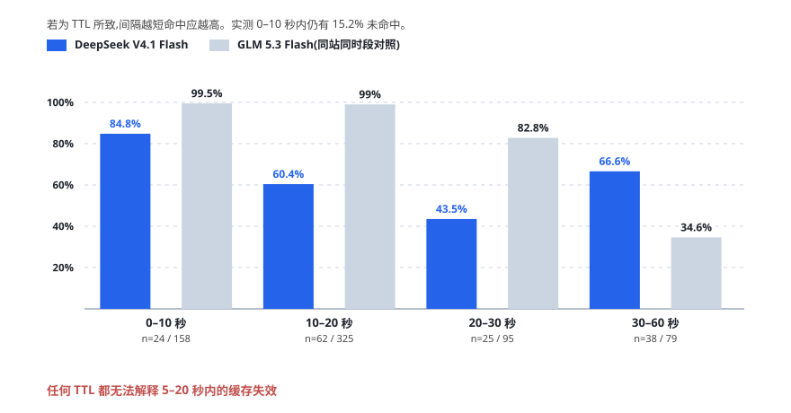
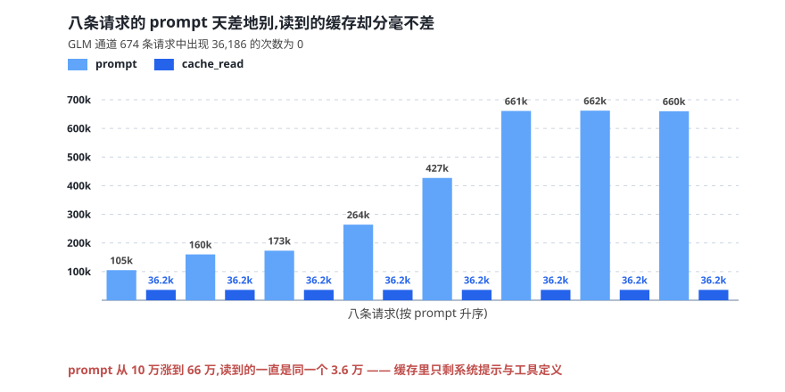

前缀缓存是长上下文成本的主要变量。当一份上下文被反复送入模型时，命中部分按远低于新增 token 的价格计费；一旦前缀被判定为新内容，整段历史都要重新计价。对以长对话为常态的 Agent 类负载而言，这一项往往占账单的多半。
2026 年 10 月 5 日的一份用量账单显示，同一中转站、同一客户端、同一时段的两个模型，缓存表现相差一个数量级。以下是对这份账单的逐项测量。
一 两个数
| 指标 | 一组 | 对照组 | 差异 |
|---|---|---|---|
| 请求数 | 173 | 674 | — |
| 整体缓存命中率 | 60.4% | 87.2% | −26.8pt |
| 严重未命中率（命中 <20%） | 38.2% | 12.9% | 2.96× |
| 命中时的命中深度 | 91.6% | 99.6% | −8.0pt |
| 命中时平均漏算 token | 31,568 | 1,511 | 20.9× |
| 单位成本（每百万 token） | ¥0.041 | ¥0.027 | +52% |
单看命中率，可以解释为「这一路的负载更重」。但把请求按相邻间隔切开之后，这个解释站不住。
二 五秒之内的失效

对照组在 0–20 秒窗口内稳定保持在 99% 以上。实验组在 10–20 秒这一档就已经跌到 60.4%，0–10 秒档内仍有 15.2% 未命中。
任何以时间为基础的过期策略，都无法解释五秒到二十秒之内的缓存失效。
三 走失又回来
排查中出现了一个高度一致的时序模式：某条请求完全未命中（读取量接近 0），而它之后五到十四秒内的下一条请求，却完整读到了几乎相同的上下文。
15:57:21 prompt=176,576 命中 99.8% ← 正常
15:57:40 prompt=177,245 命中 2.2% ← 同一上下文，缓存整个消失
15:57:49 prompt=177,623 命中 99.8% ← 九秒后自动恢复
16:02:20 prompt=182,000 命中 99.5%
16:02:29 prompt=186,233 命中 0.0% ← 完全未命中
16:02:37 prompt=189,000 命中 98.6% ← 八秒后恢复这一现象排除了一整类解释。缓存若真被清除，下一条不可能在十秒之内读回。唯一自洽的读法是：缓存内容客观存在且可用，只是中间那一条请求没有落到持有缓存的实例上。
统计口径上，153 条全未命中请求中有 116 条（75.8%）在下一条同内容请求上恢复。
四 三六一八六

实验组有八条请求的缓存读取量恰好等于 36,186，而它们各自的输入规模从十万到六十六万不等。对照组 674 条请求中，出现该值的次数为零。
这提示存在一个约 36k token 的固定可缓存前缀——大致相当于系统提示与工具定义的部分。超出该范围的内容，在某些请求上完全无法命中。
与之呼应的是未命中请求的读取量分布：全部落在 0 到 36k 之间，而这些请求的输入普遍在 30 万到 66 万。缓存里只剩下不足 5% 的内容。
五 排除法
把可能性逐条放回数据里检验，只剩一条站得住。
过期策略
排除。0–10 秒窗口内仍有 15.2% 的失效率。以时间为基础的策略不可能在十秒内失效，而十秒之后又自动恢复。
客户端改写前缀
排除。命中请求的读取量恰好等于输入减去本轮新增的少量 token，正是「前缀不变、只在尾部追加」的标准形态。若前缀每轮被改写，命中行的读取量会接近零，而不是二十万到四十二万。
同一份客户端代码、同一条网络出口（账单中来源地址全部一致），只有一组异常。
上游多实例调度
主因。一条线索同时解释了三件事：五到二十秒内失效（过期策略解释不了）、失效后五到十四秒又能读回（缓存被删解释不了）、38.2% 的严重失效率（与两到三个实例轮询的理论值吻合）。失效与恢复交替出现且间隔不规律，符合负载均衡调度的特征。
可缓存容量上限偏低
并存因素。恒定值的存在、命中深度仅 91.6%、以及 p90 漏算 121,586 token，都指向容量侧的另一重限制。
六 归因与边界
本文的全部证据来自账单侧，属间接证据。上游侧日志方能给出最终定论。
若主因确为多实例调度，则修复方向是明确的：对同一 API Key 或同一会话启用粘性路由，把请求固定到同一上游实例。这一项不需要改动客户端。
本文因此不作「缓存坏了」的结论，只作一个更弱的、可被证伪的判断：缓存在那里，只是有时看不见。
写在后面的话
「物有本末，事有终始，知所先后，则近道矣。」
这份报告最初是想写一封投诉信。写到一半发现投诉不成立——问题不在服务坏了，而在我们看错了对象：把「命中率低」当成「缓存少」，于是所有排查都朝着容量和过期两个方向走，越走越偏。
真正把方向掰回来的，是那条「失效后九秒又读回」的时序。它本身不构成结论，却排除了一整类解释。测量中最有价值的往往不是均值，而是那些不符合预期的个例——它们不告诉你答案，只告诉你不可能是哪个答案。
另一个细节值得记下：那个恒定的 36,186。它在八条规模相差六倍的请求上分毫不差地重复出现。一个陌生常量反复出现，通常意味着背后有一条我们还没看到的规则。
dsh-auto-memory 项目组 · 2026